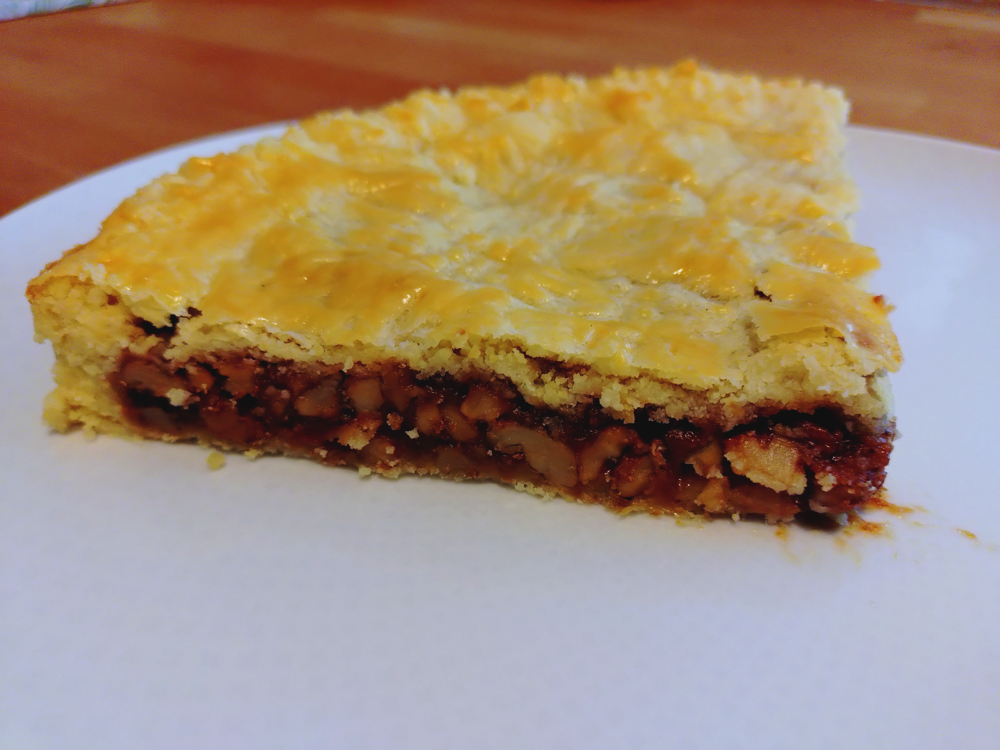

Auch Bündner Nusstorte nach dem Kanton Graubünden. Eine wuchtige Torte aus der Schweiz mit Mürbeteig, Karamell und Walnüssen.

Zutaten (Menge ×1)
Gib die gewünschte Menge an:
Mürbeteig
Mehl
Zucker
Butter
Ei M
Salz
Röstmasse
Walnüsse
Wasser
Zucker
Schlagsahne mit 32% Fettanteil oder mehr
Eistreiche
Ei
Wasser
Utensilien
Springform
Ofeneinstellung
⏲ 150°C Umluft, 35 Min
Vortag
Zucker, Butter, Salz flockig rühren.
Ei dazugeben und gründlich zu einer Buttercreme verrühren.
Mehl von Hand nur so lange einkneten, bis ein gleichmäßiger Teig entsteht.
Den Teig zu 3 gleichen Kugeln formen und für eine Nacht im Kühlschrank ruhen lassen.
Backtag
Teigkugeln eine Stunde vor der Verarbeitung aus dem Kühlschrank holen und aklimatisieren lassen.
Röstmasse
Walnüsse in der Hand zu kleineren Stückchen zerdrücken.
Zucker und Wasser bei mittlerer Hitze karamellisieren.
Währenddessen die Sahne kochen, damit sie sehr heiß ist.
Wenn der Zucker sich aufgelöst hat, die kochend heiße Sahne langsam unter ständigem Rühren dazugeben.
Es ist normal, dass es dabei stark blubbert und dampft. Allerdings sollten sich keine Klümpchen formen. Andernfalls war der Temperaturunterschied zwischen Sahne und Karamell zu hoch und man sollte von vorne beginnen.
Den Herd ausstellen und die Walnüsse einmischen.
Walnuss-Röstmasse abkühlen lassen. Währenddessen mit dem Teig fortfahren.
Teigboden
Springform mit Backpapier auskleiden.
Aus der ersten Kugel einen Boden formen, indem die Kugel mit dem Handballen auf dem Springformboden angedrückt und verteilt wird.
Aus der zweiten Kugel einen Rand formen. Dazu den Teig zu einer Wurst drehen, die dem Umfang der Springform entspricht. Diese am Rand platzieren und zu einem halben Zentimeter dicken Rand andrücken.
Die abgekühlte Röstmasse auf dem Teigboden verteilen.
Aus der dritten Teigkugel den Deckel formen und auflegen.
Für die Eistreiche das Ei und Wasser gleichmäßig verrühren. Mit einem Pinsel den Kuchen einstreichen.
Mit einer Gabel flach über den Kuchendeckel ziehen um ein Streifenmuster zu erzeugen. Jeweils eine Gabelbreite Platz zwischen den Streifen lassen. Den Kuchen um 90° drehen und weitere Streifen ziehen um ein Gittermuster zu erhalten.
Mit der flachen Gabel anschließend den Rand entlang eindrücken und ihn damit verzieren und versiegeln.
Zum Schluss mit der Gabel senkrecht einige Löcher in den Deckel stechen, damit Dampf entweichen kann.